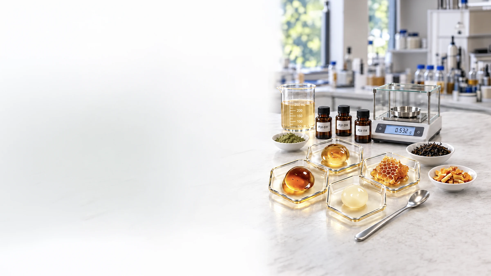
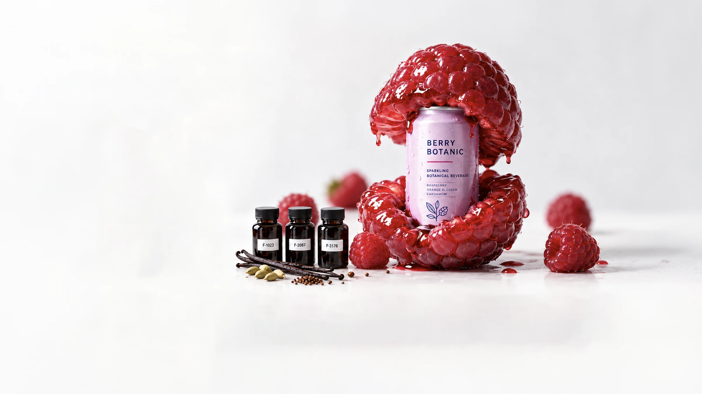
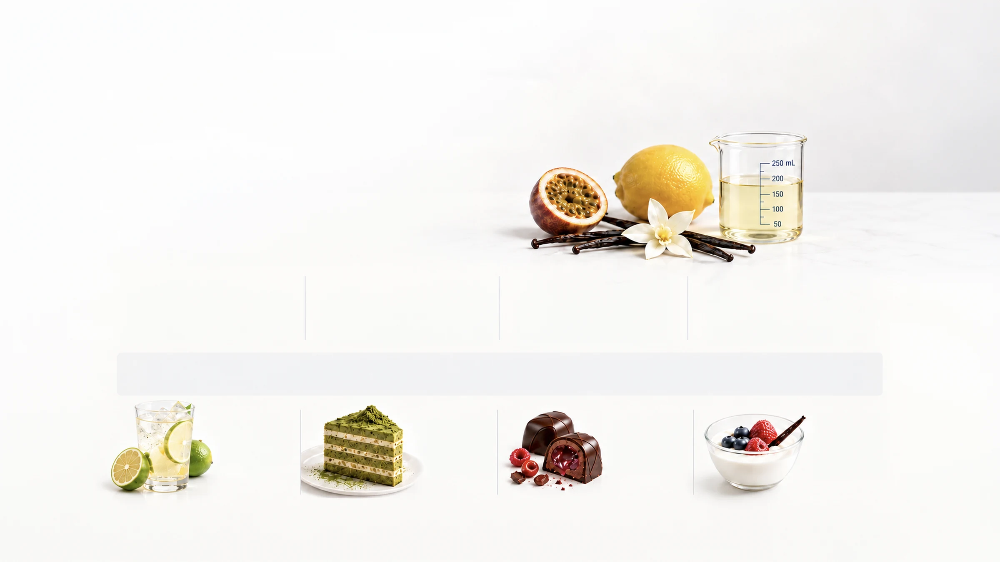
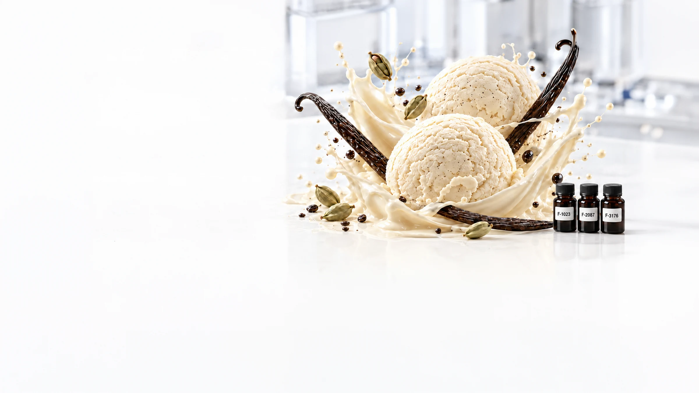

Natural Flavor Extracts
Selected citrus, tea, spice and botanical extracts that deliver authentic aroma, taste and color.

Synesthetic Flavors
Innovation starts with food ingredients.
Through our global sourcing network, we identify safe, relevant and application-ready ingredients for next-generation food and beverage development.
Selected citrus, tea, spice and botanical extracts that deliver authentic aroma, taste and color.
Fruit concentrates, juice compounds and natural fractions designed for vibrant, true-to-fruit profiles.
Food-grade ingredients supporting stability, texture, nutrition and clean-label formulation.
Sweetness, acidity, mouthfeel and masking solutions optimized for real food and beverage applications.
Synesthetic FlavorsSensory Science for Better Food & Beverage Experiences

How We Create Value
Advertising may attract attention.
Packaging may create expectation.
But the real experience begins when people taste the product.
That is why we work across the complete value chain—from ingredient insight and market intelligence to flavor development and consumer experience.
Understanding ingredients, markets and consumer trends to uncover opportunities.
Crafting flavor solutions that deliver performance, differentiation and sensory delight.
Ensuring the final product delivers meaningful experiences that build trust and loyalty.

More than a flavor supplier, we connect market insight, flavor design, application expertise and ingredient innovation to create products people truly want to experience.
Customized Development
Customization has always been one of our core strengths. We translate product concepts, target consumers and market needs into balanced, application-ready flavor solutions.
We help shape and refine your ideas into feasible, delicious flavor directions.
We understand who you serve and what they love, expect and value.
We design the right taste, aroma and mouthfeel for your application.
We align flavor with market trends, category needs and brand positioning.
Bright lime & yuzu sparkling refresher with a clean finish.
Matcha cream layered sponge with gentle roasted notes.
Dark chocolate shell with juicy berry center and floral lift.
Creamy yogurt with honeyed vanilla and mixed berry notes.

From Lab to Product
A successful flavor is not only attractive in isolation—it must work under real formulation, processing, and application conditions.
Define the flavor direction for the product concept.
Apply flavor in the actual formulation and process.
Evaluate aroma, taste, texture and overall acceptance.
Adjust dosage and flavor profile to improve balance.
Confirm performance, stability and consistency.